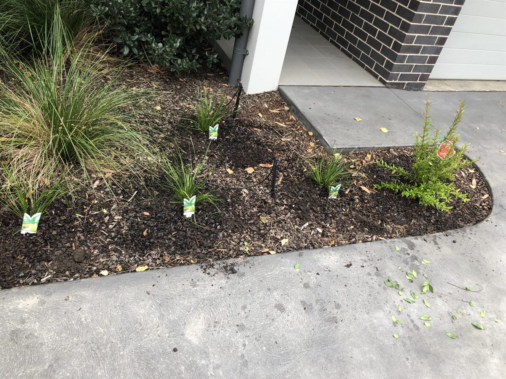

Homeowners
Regular or one-off garden maintenance for lawns, hedges, paths, beds and outdoor spaces.
A practical local gardening service for St Ives, St Ives Chase and Sydney North Shore properties.
Local and practical
Grene Gardening provides professional gardening, garden maintenance and property care for homeowners, strata managers and local businesses around St Ives and the North Shore.
The service is focused on the work local properties need most: mowing, edging, hedge trimming, pruning, weeding, mulching, green waste removal, garden clean ups and ongoing maintenance.
Rather than overcomplicating garden care, Grene Gardening aims to provide clear advice, practical options and tidy results that suit the property.

Regular or one-off garden maintenance for lawns, hedges, paths, beds and outdoor spaces.
Common area garden maintenance for apartment blocks, shared gardens and strata grounds.
Commercial and property maintenance gardening where clean, reliable presentation matters.
Call 0448 605 591 or request a free quote online.